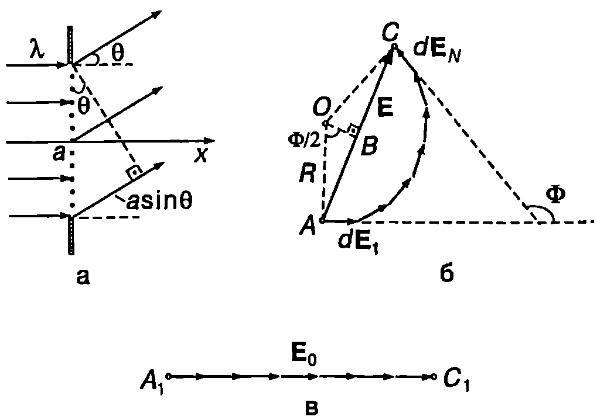
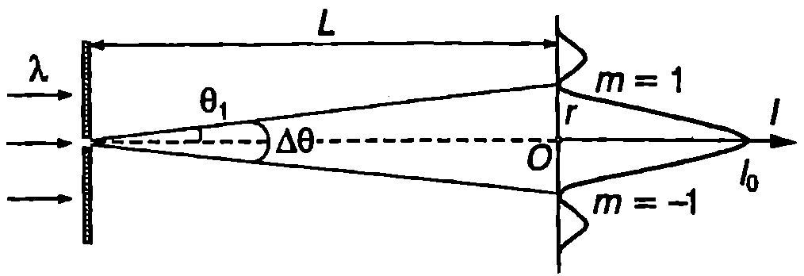
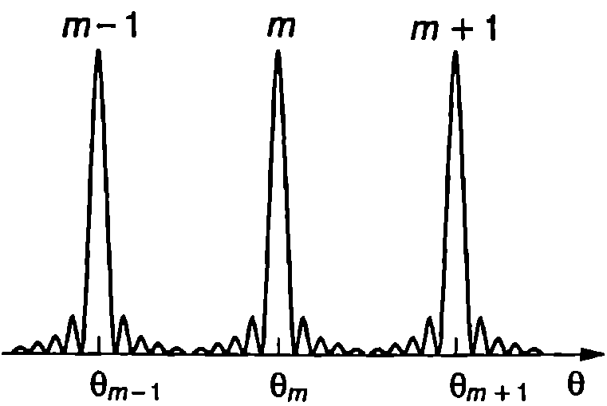

За описване на дифракцията от важно значение е какъв брой зони на Френел се покриват от отвора или от преградата, от които дифрактира светлината. Това зависи преди всичко от положението на точката на наблюдение. Нека върху кръгъл отвор с диаметър $D$ (вж. Фиг. \ref{fig:92.2} на стр. 211), който е сравним с дължината на вълната я на светлината (например $D = 10\lambda$), пада успореден сноп светлина, излъчен от безкрайно отдалечен източник ($r_0 = \infty$). Тогава от формула \eqref{eq:92.1} за радиуса на първата зона на Френел се получава $R_1 = \sqrt{r\lambda}$. Следователно, когато точката на наблюдение се намира на малко разстояние $r$ от отвора, радиусът на първата зона на Френел е сравним с диаметъра $D$ на отвора и за такава точка на наблюдение са разкрити първата или първите няколко зони на Френел. Този случай на дифракция, който вече разгледахме, се нарича френелова дифракция.
Когато точката на наблюдение се на мира на много голямо разстояние от отвора, в сила е неравенството $R_1\gg D$. Тогава отворът разкрива само много малка част от първата зона на Френел и може да се използват някои съществено опростяващи задачата приближения. Този случай на дифракция е изследван от германския физик Йозеф фон Фраунхофер (1787-1826) и се нарича в негова чест фраунхоферова дифракция (или дифракция в далечното поле). Фраунхоферовата дифракция има голямо практическо значение в оптичните прибори.
Ще отбележим, че когато отворът е много широк, т.е. при $D \gg R_1$, се разкриват много голям брой зони на Френел и дифрационните ефекти са незначителни. В сила е законът за праволинейното разпространение на светлината, като дифракционни ивици с много малък интензитет се наблюдават само около границата на геометричната сянка.
Дифракция от процеп
Плоска монохроматична светлинна вълна с дължина на вълната $\lambda$ пада перпендикулярно върху дълъг тесен процеп в непрозрачен екран (Фиг. \ref{fig:93.1}а). Широчината на процепа е $a>\lambda$. Според закона за праволинейното разпространение на светлината зад процепа трябва да се формира успореден сноп светлина с широчина, равна на широчината на процепа, който се разпространява в същата посока, както падащата вълна (по оста $x$). В резултат на дифракцията обаче се появяват допълнителни светлинни вълни, които се разпространяват в посоки, различни от първоначалната. Тези вълни се наричат дифрактирали вълни, а нормалите към вълновите им повърхности дифрактирали лъчи. Те сключват различни ъгли $\theta$ с оста $x$ (Фиг. \ref{fig:93.1}а). Ще определим интензитета на дифрактиралата светлина като функция от ъгъла $\theta$. Разделяме мислено процепа на $N$ еднакви тесни успоредни ивици, които съгласно с принципа на Хюйгенс са кохерентни източници на вторични цилиндрични вълни. Когато $a>\lambda$ може да се приеме, че електричното поле в равнината на процепа е приблизително същото, както ако падащата плоска вълна се разпространяваше свободно. Симетрията позволява допълнително да се опрости задачата, като се замени процепът с отсечка, върху която на равни разстояния един от друг са разположени $N$ еднакви кохерентни точкови източника (Фиг. \ref{fig:93.1}a).
Ще определим интензитета на електричното поле на дифрактиралата под ъгъл $\theta$ вълна с помощта на векторна диаграма.

`Фиг. 93.1`
На нея трептенията на електричните поле та на вторичните вълни се представят с вектори с равни модули, които са завъртени един спрямо друг на един и същ ъгъл, равен на фазовата разлика между вълните от два съседни източника. Векторът, който свързва двата края $A$ и $C$ на получената начупена линия, задава интензитета $\vec E$ на резултантното електрично поле на дифрактиралата под ъгъл $\theta$ вълна (Фиг. \ref{fig:93.1}б). При $N \to \infty$ начупената линия преминава в дъга от окръжност. Централният ъгъл $\Phi$ е равен на фазовата разлика между вторичните вълни, излъчени от двата края на процепа. От Фиг. \ref{fig:93.1}а се вижда, че разликата в пътищата на тези вълни е $\Delta r = a \sin \theta$ Следователно $$\Phi = k\Delta r = ka \sin\theta, $$ където $k = 2\pi/\lambda$ е вълновото число. От правоъгълния триъгълник $ABO$ изразяваме амплитудата $E$ на електричното поле: $$E = 2R \sin\frac{\Phi}{2}. $$ Да означим с $E_0$ амплитудата на електричното поле на вълната, която не променя посоката си на разпространение ($\theta = 0$) В този случай между вторичните вълни не възникват фазови разлики и $E_0$ е сума от амплитудите на вторичните вълни (Фиг. \ref{fig:93.1}в). Дължината на отсечката $A_1C_1$ е равна на дължината на дъгата $AC$ от Фиг. \ref{fig:93.1}б. Следователно $E_0 = AC = \Phi R$. Заместваме $R$ в уравнение \eqref{eq:93.2} и за амплитудата $E$ на електричното поле на дифрактиралата под ъгъл $\theta$ вълна получаваме $$E = E_0 \frac{\sin\frac{\Phi}{2}}{\frac{\Phi}{2}}. $$ Интензитетът на дифрактиралата светлина ($I \propto E^2$) е $$I = I_0 \left(\frac{\sin\frac{\Phi}{2}}{\frac{\Phi}{2}}\right)^2. $$ където $I_0 \propto E_0^2$ е интензитетът на недифрактиралата светлина ($\theta = 0$) Графиката на функцията $I(\Phi/2)$ е показана на Фиг. \ref{fig:93.2}а.

Фраунхоферова дифракция от процеп: а) зависимост на интензитета $I$ от $\Phi/2$; б) фотография на дифракционната картина.
`Фиг. 93.2`
Тя има минимуми $I_{\min} =0$ при $\sin(\Phi/2) = 0$, т.е. при $$\frac{\Phi}{2}= m\pi\quad (m=\pm1,\pm2 ,…), $$ където цялото число $m$ определя порядъка на дифракционните минимуми. Заместваме $\Phi$ от уравнение \eqref{eq:93.1} в \eqref{eq:93.5} и определяме ъглите $\theta_m$ при които се получават дифракционните минимуми: $$a\sin\theta_m = m\lambda (m=\pm1,\pm2 ,…), $$ Дифракционните максимуми са разположени приблизително по средата между два съседни минимума. Основният максимум, в който е съсредоточена по-голямата част от преминалия през процепа светлинен поток, се намира при ъгъл $\theta = 0$ Интензитетът на дифракционните максимуми намалява при увеличаване на техния порядък $m$.
В описания случай на фраунхоферова дифракция от процеп точковият източник на светлина е безкрайно далече, така че върху процепа попада плоска вълна. Дифракционната картина се наблюдава върху безкрайно отдалечен екран, където се събират успоредните лъчи, дифрактирали под съответните ъгли $\theta$. На практика обаче източникът и екранът се разполагат сравнително близо от двете страни на процепа. Тогава се използват две събирателни лещи. Източникът се поставя във фокуса на първата леща, при което тя формира успореден сноп светлина, който пада върху процепа. Дифрактиралите под различни ъгли $\theta$ успоредни снопове светлина (плоски вълни) се събират от втората леща във фокалната и равнина, където се поставя екранът, върху който се получава дифракционната картина. С помощ та на лазерен източник на светлина може да се наблюдава дифракция от процеп без да се използват лещи. Успоредният сноп светлина от лазера пада непосредствено върху процепа, а зад него, на разстояние около 1 m (в далечното поле), се поставя екранът, където се наблюдава дифракционната картина: редуващи се светли и тъмни ивици, разположени симетрично от двете страни на ярката централна светла ивица (Фиг. \ref{fig:93.2}б).
Пример 93.1
Определете интензитета на първия и на втория максимум на дифрактиралата от процеп светлина, ако интензитетът на централния максимум $(\theta = 0)$ е $I_0$. \end{psexample}
Решение
Ще смятаме, че максимумите са разположени по средата между два съседни минимума. Тогава от Фиг. \ref{fig:93.2}а се вижда, че $\displaystyle \frac{\Phi}{2} = \pm \frac{3}{2} \pi$ за максимумите от $m = \pm 1$ порядък и $\displaystyle\frac{\Phi}{2} = \pm \frac{5}{2} \pi$ за максимумите от $m = \pm 2$ порядък. Заместваме тези стойности за $\Phi/2$ в уравнение \eqref{eq:93.4} и определяме интензитети $I_1$ и $I_2$ на дифракционните максимуми от първи и втори порядък: $$I_1 = I_0 \left(\frac{2}{3\pi}\right)^2 = 0,!045I_0;\quad I_2 = I_0 \left(\frac{2}{5\pi}\right)^2 = 0,!016I_0$$ Следователно интензитетът на най-яркия от дифракционните максимуми (първия) е само 4,5% от интензитета на централния максимум. Затова в повечето случаи можем с приближение да смятаме, че целият преминал през процепа светлинен поток е съсредоточен в централния максимум, т.е. в ъгловия интервал между дифракционните минимуми от $\pm1$-ви порядък.
Дифракционна разходимост
Съгласно с уравнение \eqref{eq:93.6} първият дифракционен минимум от процеп се получава при ъгъл $\theta_1$, за който $\sin\theta_1 =\lambda/a$. Когато процепът е достатъчно широк, т.е. при $\lambda/a\ll1$, ъгълът $\theta_1$ е много малък и е в сила приближението $\theta_1\approx\lambda/a$. Ъгловата широчина на централния максимум е (Фиг. \ref{fig:93.3})

`Фиг. 93.3`
$$\Delta\theta = 2\theta_1 = \frac{2\lambda}{a} $$ Ъгълът $\Delta\theta$ определя дифракционната разходимост на снопа светлина в резултат на преминаването му през процеп с широчина $a$.
И така, след преминаване през процеп, успоредният сноп светлина става разходящ. Появяват се дифрактирали вълни, които се разпространяват под различни ъгли $\theta$ спрямо първоначалната посока на разпространение на снопа. Дифрактиралите под големи ъгли $\theta$ вълни имат малък интензитет, поради което може да се приеме, че целият светлинен поток е съсредоточен в ъгловия интервал $\Delta\theta$ около първоначалната посока на разпространение.
При преминаване на успореден сноп светлина през кръгъл отвор в непрозрачен екран се получава аналогична на уравнение \eqref{eq:93.7} зависимост за ъгъла $\Delta\theta$ на дифракционна разходимост: $$\Delta\theta = \frac{1,!22\lambda}{a} , $$ където $a$ е радиусът на отвора.
Следователно всеки опит да се намали напречното сечение на светлинен сноп, например чрез пропускането му през тесен отвор (диафрагма), води до поява на дифракционно разширение: снопът става разходящ, придобива форма на конус с ъгъл при върха $\Delta\theta$ и напречното му сечение непрекъснато нараства при отдалечаването от отвора. Дифракционното разширение е свързано с вълновата природа на светлината и при зададено сечение на снопа не може да бъде отстранено. От уравнения \eqref{eq:93.7} и \eqref{eq:93.8} следва, че колкото по-тесен е снопът (малка стойност на радиуса а на напречното сечение на снопа), толкова е по-голяма неговата дифракционна разходимост.
Пример 93.2
Лазерен сноп светлина с радиус $a = 1$ cm, разходимостта на който се определя от дифракцията, е насочен към Луната. Колко е радиусът на осветената лунна повърхност? Какво трябва да се направи, за да се намали този радиус?
Разстоянието до Луната е $L =384\ 000$ km. Дължината на вълната на лазерното излъчване е $\lambda = 633$ nm. Разсейването и поглъщането на светлината от атмосферата се пренебрегва. \end{psexample}
Решение
Началният радиус а на снопа определя неговата дифракционна разходимост: $\displaystyle\Delta\theta = \frac{1,!22\lambda}a$. От чертежа на Фиг. \ref{fig:93.3}, като отчетем, че $\Delta\theta$ е малък ъгъл ($\tan(\Delta\theta/2)\approx\Delta\theta/2$), намираме радиуса $r$ на петното върху лунната повърхност: $$\frac{\Delta\theta}2 = \frac{r}{L} ;\ r= \frac{\Delta \theta L}2 = \frac{1,!22 \lambda L}{2a} \approx15~\mathrm{km}.$$ За да се намали $r$, трябва да се увеличи началната широчина на снопа, което може да стане например с помощта на сферично или параболично огледало с голяма площ.
Дифракционна решетка
Най-простата дифракционна решетка представлява стъклена пластинка, върху която на малко разстояние един от друг машинно са нанесени голям брой нарези (штрихи), които разсейват светлината. Така върху пластинката периодично се редуват еднакви, тънки, прозрачни за светлината ивици (процепи), разделени от непрозрачни нарези. В по-общ смисъл дифракционна решетка се нарича всяко устройство, създаващо пространствена периодична модулация на падащата върху него светлинна вълна по амплитуда или по фаза. За стъклените решетки дифракционна картина се получава след като светлината премине през тях. Ако штрихите се нанесат върху огледална метална повърхност, дифракционната картина ще се наблюдава в отразена светлина. Такива решетки се наричат отражателни.

`Фиг. 93.4`
Да означим с $a$ широчината на прозрачните, а с $b$ — на непрозрачните области от решетката. Величината $d = a + b$ се нарича константа на дифракционната решетка (Фиг. \ref{fig:93.4}). Когато перпендикулярно на дифракционна решетка с $N$ процепа пада плоска монохроматична вълна с дължина на вълната $\lambda$, върху отдалечен екран или във фокалната равнина на събирателна леща се наблюдава фраунхоферова дифракционна картина. Тя е съставена от резки максимуми с голям интензитет, наречени главни дифракционни максимуми. Между два съседни главни максимума са разположени $N - 1$ на брой второстепенни максимума с много по-малък интензитет (Фиг. \ref{fig:93.5}). Ще определим положението на главните максимуми. От Фиг. \ref{fig:93.4} се вижда, че разликата в оптичните пътища на дифрактиралите под ъгъл $\theta$ от два съседни процепа вълни е $$\Delta r = d\sin\theta. $$ Тези вълни се събират в точка върху безкрайно отдалечен екран или във фокалната равнина на събирателна леща, където интерферират помежду си. Ако разликата в пътищата на вълните от два съседни процепа е равна на цяло число дължини на вълната, вълните от всички процепи взаимно се усилват и за съответната стойност $\theta_m$, на ъгъла в се получава главен максимум. Условието за напълно конструктивна интерференция (главен максимум) в $$d\sin\theta_m = m\lambda (m=0,\pm1,\pm2 ,…), $$ Следователно ъглите $\theta_m$ при които се получават главните максимуми, зависят само от константата $d$ на решетката и от дължината на вълната $\lambda$ на светлината.

`Фиг. 93.5`
Ще определим интензитета $I$ на централния максимум ($m = 0$) Означаваме с $E_0$ амплитудата на електричното поле на вторичната вълна от един процеп в направление $\theta = 0$. Тъй като в това направление между вълните от отделните процепи не възниква фазова разлика, амплитудите на полетата се сумират и амплитудата на резултантното поле е $E = NE$. За интензитета на централния дифракционен максимум, който е пропорционален на $E^2$, се получава $$I = N^2 l_0 $$ където $I_0\propto E_0^2$ е интензитетът, който би създал само един процеп.
Когато процепите на дифракционната решетка са много тесни, те са подобни на точкови източници, които излъчват с еднакъв интензитет във всички посоки. Тогава формула \eqref{eq:93.11} е в сила за всички главни максимуми, които имат еднакъв интензитет. Той нараства правопропорционално на квадрата на броя на процепите на дифракционната решетка. Освен това при увеличаване на $N$ максимумите стават по-тесни. Ще отбележим, че в общия случай интензитетът на главните максимуми зависи от размера и формата (профила) на процепите. Те могат да се подберат така, че интензитетът на някои от главните максимуми да е голям, а на други — малък или равен на нула.
Пример 93.3
Върху дифракционна решетка с 5000 штрихи на 1 cm дължина пада нормално успореден сноп монохроматична светлина с дължина на вълната $\lambda = 550$ nm. Колко главни максимума ще се наблюдават? \end{psexample}
Решение
Най-напред ще определим константата на дифракционата решетка: $$d = \frac{1~\mathrm{cm}}{5000} = 2~\mathrm{\mu m}.$$
Положението на главните максимуми се определя от уравнение \eqref{eq:93.10}: $\displaystyle\sin\theta_m = \frac{m\lambda}d$. Тъй като синусът на един ъгъл не може да бъде по-голям от единица, за да се наблюдава главен максимум от $m$-ти порядък, трябва да е изпълнено неравенството $m\lambda/d \leq 1$. Непосредствено проверяваме, че $m = 3$ удовлетворява това неравенство, а $m = 4$ не го удовлетворва. Следователно ще се наблюдават общо 7 главни максимума ($m=0,\pm 1,\pm 2$ и $\pm3$).
**Дифракционни спектри **
От уравнение \eqref{eq:93.10} следва, че положението на главните максимуми на дифракционната решетка (с изключение на централния $m = 0$ зависи от дължината на вълната $\lambda$ на падащата светлина. Колкото по-голяма е $\lambda$, толкова под по-голям ъгъл $\theta_m$ се наблюдава главният максимум от $m$-ти порядък. Бялата светлина е суперпозиция от монохроматични вълни с различни дължини. Всяка от тях, след като премине през дифракционната решетка, създава своя дифракционна картина. Дифракционните картини, съответстващи на различните дължини на вълната, са отместени в пространството една спрямо друга решетката разлага бялата светлина и върху екрана се наблюдават дифракционни спектри. В центъра на екрана се получава бяла ивица (централен максимум $m = 0$). Най-близо до нея е разположен главният дифракционен спектър от първи порядък $m = 1$ който представлява цветна ивица, съдържаща всички цветове на дъгата (Фиг. \ref{fig:93.6}): от червен (най-голяма дължина на вълната) до виолетов (минимална дължина на вълната). След това е главният дифракционен спектър от втори ($m = 2$) порядък и т.н.

`Фиг. 93.6`
Дифракционните решетки, подобно на призмите, се използват в спектралните апарати за разлагане на бялата светлина. За да се изследва определена спектрална област (от $\lambda$ до $\lambda+\Delta\lambda$), трябва спектрите от съседни порядъци ($m$ и $m + 1$) да не се припокриват. Максималната широчина Да на спектъра, при която все още няма припокриване, се нарича дисперсионна област на спектралния апарат. Ще определим дисперсионната област на спектрален апарат с дифракционна решетка. Припокриването на спектрите от $m$-ти и $m + 1$-ви порядък започва, когато главният максимум от $m$-ти порядък за най-голямата дължина на вълната ($\lambda + \Delta\lambda$) съвпадне с главния максимум от $m + 1$-ви порядък за най-малката дължина на вълната ($\lambda$) от изследваната спектрална област. Записваме условието \eqref{eq:93.10} за главен максимум: $$d\sin \theta_m = m(\lambda+\Delta\lambda);\quad d \sin \theta_{m + 1} = (m + 1) \lambda.$$
Припокриването на двата спектъра започва при $\theta_m = \theta_{m + 1} $. Приравняваме десните страни на горните две равенства и определяме дисперсионната област на дифракционната решетка: $$\Delta \lambda = \frac{\lambda}{m}. $$ Следователно при зададена дължина на вълната $\lambda$ дисперсионната област на решетката се определя единствено от порядъка $m$ на спектъра. В спектрометрите с дифракционни решетки се използват спектри от нисък порядък (обикновено втори или трети). Те имат голяма дисперсия Да, което позволява с такива решетки да се изследва широка спектрална област.
Голямата област на дисперсия обаче не гарантира, че две близки спектрални линии с дължини на вълната $\lambda$ и $\lambda+\delta\lambda$ ще се наблюдават като две отделни линии, а няма да се слеят в една линия. Величината $$R = \frac{\lambda}{\delta \lambda}. $$ където $\delta\lambda$ е минималната разлика в дължините на вълната на двете линии, при която спектралният апарат ги разделя, се нарича разделителна способност. Доказва се, че разделителната способност на спектрален апарат с дифракционна решетка в $$R = Nm, $$ където $N$ е броят на процепите на решетката, а $m$ — порядъкът на дифракционния спектър.
Пример 93.4
Какъв минимален брой процепи трябва да има дифракционна решетка, за да разделя дублета на жълтата линия на натриева лампа ($\lambda_1 = 589,!0$ nm; $\lambda_2 = 589,!6$nm)? Наблюдава се дифракционният ри порядък ($m = 2$). \end{psexample}
Решение
От уравнения \eqref{eq:93.13} и \eqref{eq:93.14} за необходимия минимален брой процепи получаваме $$N=\frac{\lambda}{m\delta \lambda} = \frac{\lambda_1}{m(\lambda_2 - \lambda_1)}$$
Задачи
-
Защо не се наблюдава дифракция на слънчевата светлина от прозорците на стаята? Защо в гъста гора двама души, намиращи се на известно разстояние един от друг, могат да разговарят помежду си, но не се виждат? Ако видимата светлина имаше два милиона пъти по-голяма дължина на вълната (около 1 т), щяхме ли да виждаме предметите зад ъгъла?
-
Наблюдавайте вечер през опъната носна кърпа отдалечен източник на светлина (например улична лампа). Вместо източника ще видите цяла мрежа от светли петна (точки). Обяснете явлението.
-
Монохроматична светлина с дължина на вълната $\lambda = 589$ nm пада перпендикулярно на дифракционна решетка. Колко е константата на решетката, ако дифракционният максимум от втори порядък се получава при ъгъл $\theta_2=45^\circ$?
-
Върху дифракционна решетка с 8000 процепа на един сантиметър дължина пада перпендикулярно монохроматична светлина. При каква максимална дължина на вълната може да се наблюдава дифракционен максимум от втори порядък?
-
Успореден сноп монохроматична светлина с дължина на вълната $\lambda$ пада перпендикулярно върху много широк процеп. На екран, разположен на разстояние $L$ от процепа, се наблюдава светла ивица с широчина, равна на широчината а на процепа. При намаляване на процепа светлата ивица също се стеснява и широчината й достига минимална стойност при широчина на процепа $a = a_0$. При по-нататъшното стесняване на процепа светлата ивица върху екрана започва да се разширява. Обяснете явлението и определете $a_0$.
-
Две спектрални линии на смес от водород (H$_2$) и деутерий (D$_2$) имат дължини на вълната съответно 656,30 nm и 656,48 nm. Колко е минималният брой на процепите на дифракционна решетка, с която двете линии се разделят в дифракционния спектър от първи порядък?